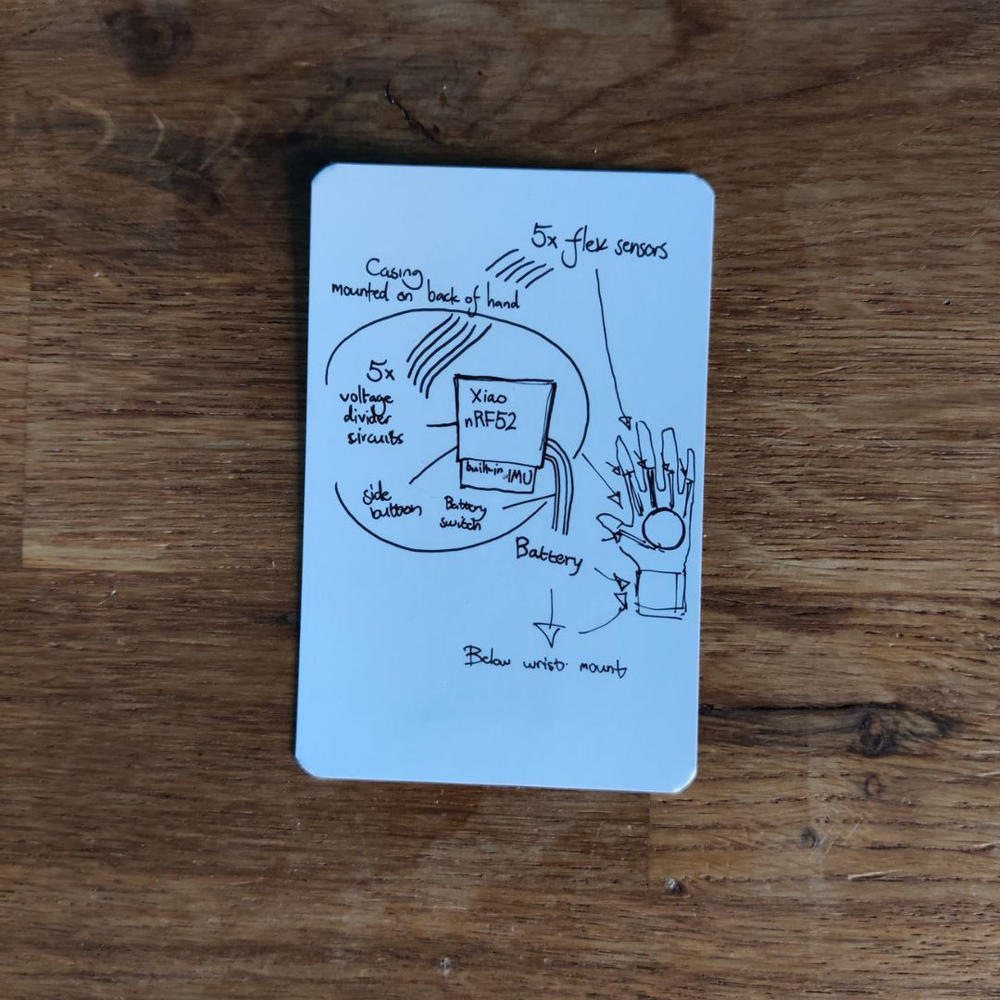
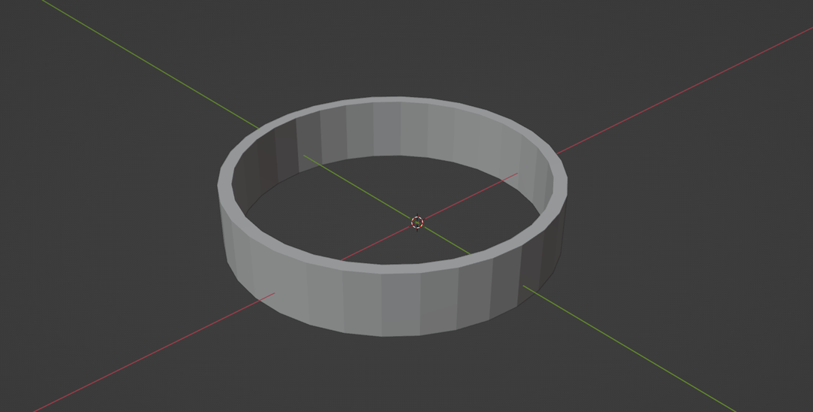
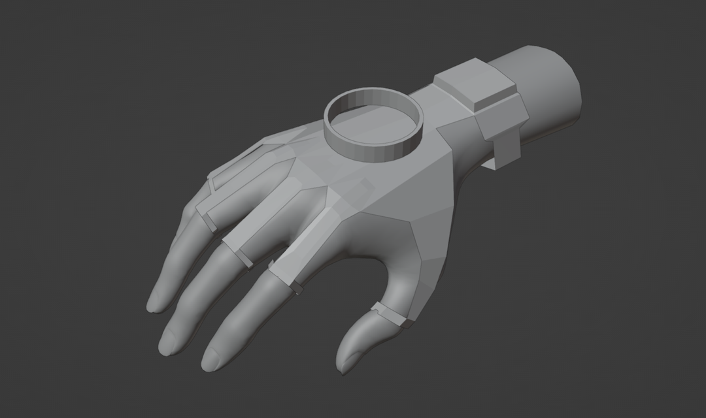
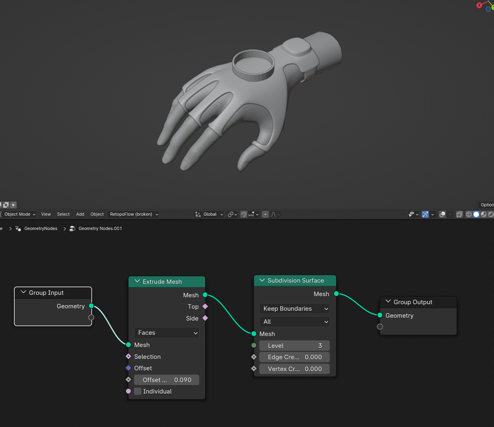
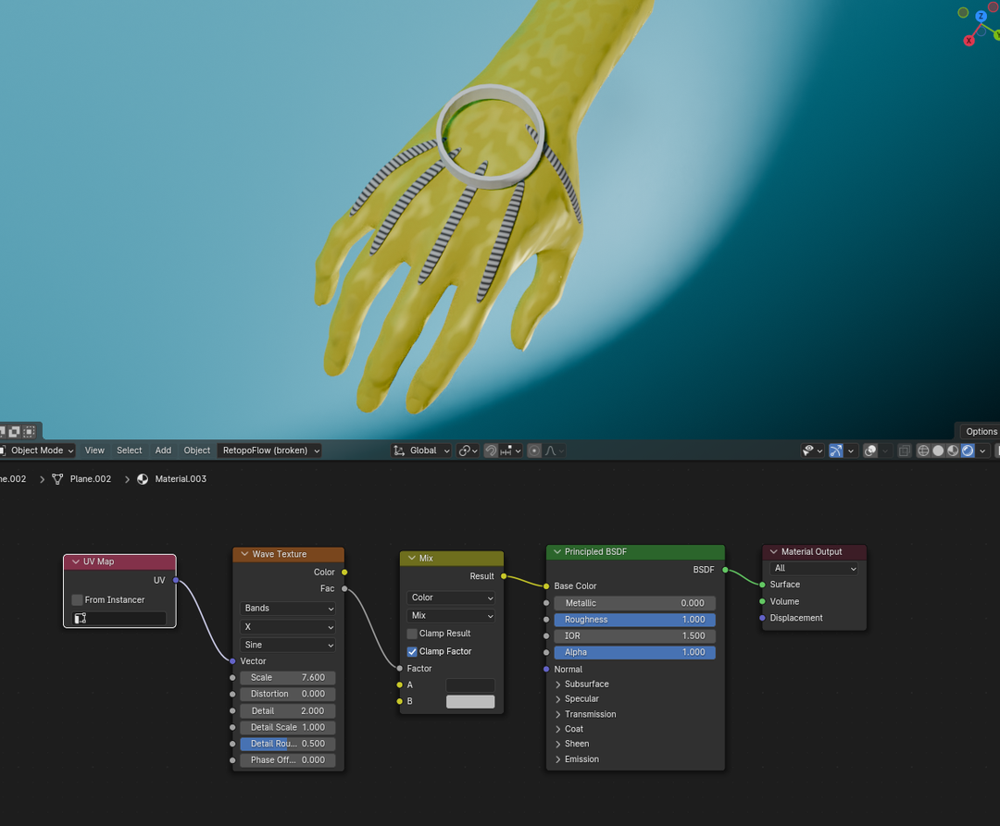
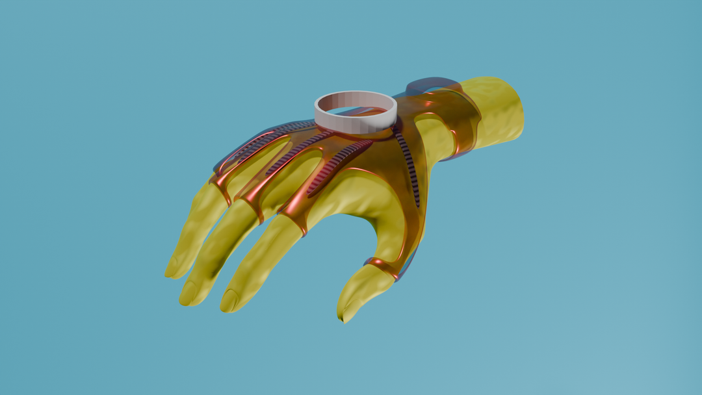
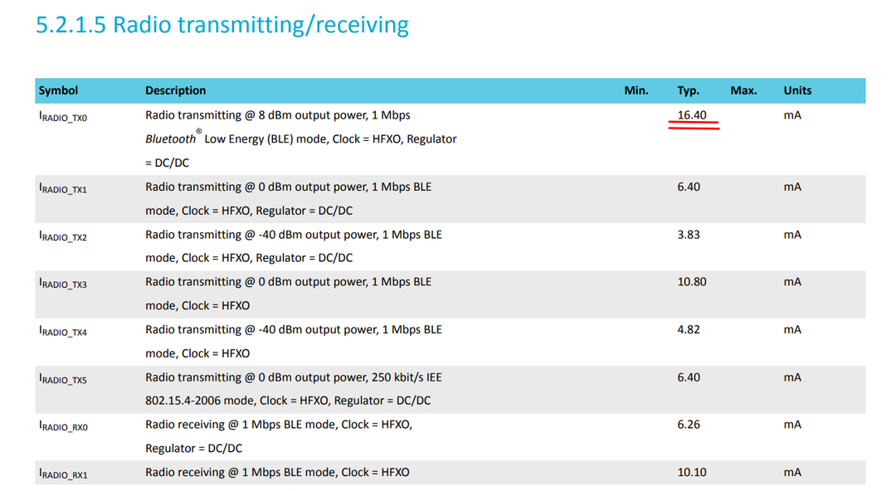
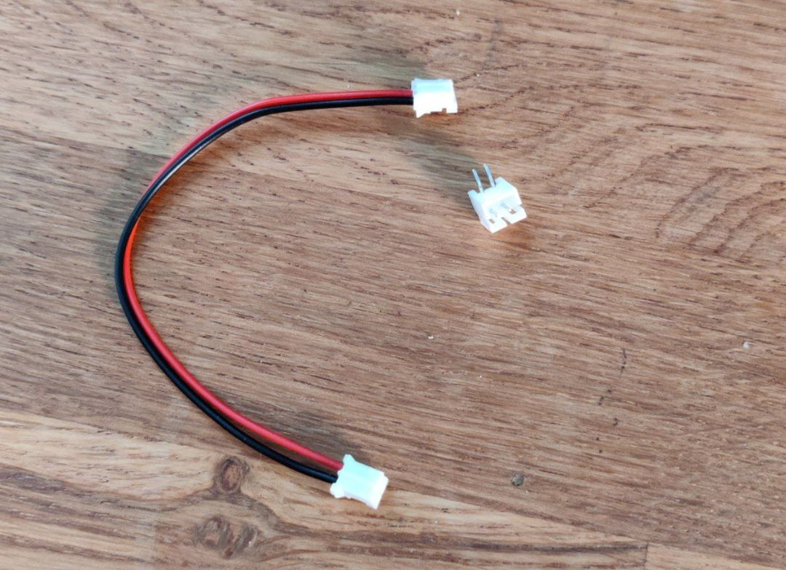

Table of Contents
Assignment
From Fab Academy page: Design and document the system integration for your final project.
To make it more specific locally, work towards the action items below.
* Draw a system diagram of your final project.
* Create a 3D design of how major components are going to fit together in your final project.
* Calculate power budget of your system and decide what power supply it will need and where it is going to enter the system.
* Decide what connectors you will use and how you will cut cables to size.
* Draw a cable management diagram.
* Decide what components will be made and what will be ready-made.Diagram
I was unsure of how detailed this diagram was meant to be. I presumed I didn’t have to go into detail about exactly how everything is wired up, just how the parts fit together.
In the casing on the back of the hand, there’s the main PCB with the nRF52 on it and the voltage divider circuits. For usability I also wanted a power switch and a generic button that would portrude out the side of the casing. The main battery would be on the forearm side just below the wrist. The voltage dividers would lead to the flex sensors placed above each finger knuckle.
3D
I went to Blender to model the mockup of the entire project.
The main PCB casing was better suited to be modeled in a proper CAD modeler like Ondsel, so as a placeholder I just made a ring that would be roughly the correct diameter.
I took a hand model from my asset library and above it modeled the rough shape of what the support structure would be. I was pitched the idea of making the glove out of some sort of flexible resin material, which would’ve meant that I could forego the actual cloth glove and just have the exoskeleton with all the relevant sensors. It seemed like a quite elegant solution.
The flat mesh was extruded and the subdivided to turn it into a more representative and solid model. The geometry node setup is shown in its entirety above.
To represent the flex sensors, I modeled each with just two polygons each and applied the same geonode tree as on the main exoskeleton. Just to make them a bit more clear, I added a shader which creates a wave texture on each sensor according to their UVs. Full shader tree pictured above.
My understanding was that the material was going to be slightly translucent. I didn’t know whether it could be dyed or if there were colour options, but I still depicted the structure as translucent red like I was wishing I could make it. During my introduction to the Formlabs resin printers, it was made clear that there was no coloring option, and that the material reserved for the printer is not translucent. Maybe I can live without them.
Power Budget
The nRF52 consumes very little. According to the datasheet, only a bit above 16 milliamps. I got a rechargeable battery of 700mAh which could theoretically run the thing for over 40 hours. Even a fifth of that would be plenty.
Cables
I decided on JST connectors for the project. They’re small, fitting well into a small PCB, but firm, so they shouldn’t come loose accidentally. The connectors would be wired together with flexible silicone cables. This would be necessary because the flex sensors would extend to below the PCB, so the wires connecting them would have to make a sharp turn. Maybe this crude wiring diagram can explain what I mean: